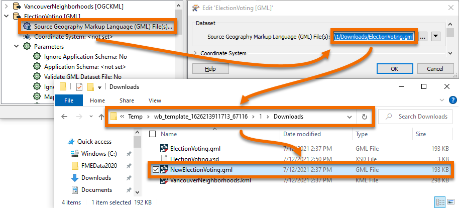
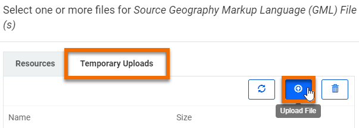

After completing this unit, you’ll be able to:
Open the starting workspace template in FME Workbench (2022.0 or later).
Let's pretend that the layer of VotingPlaces data has changed in some way. You can simulate that by simply opening a file browser and making a copy of the GML file.
You can do this by downloading a copy of ElectionVoting.gml, or by expanding the "ElectionVoting [GML]" Reader in the Navigator, double-clicking "Source Geography Markup Language (GML) File(s)", copying the directory, and pasting it into your file explorer. This will navigate you to the temporary folder where the workspace template data is stored.

In either case, once you have a local copy of ElectionVoting.gml, duplicate it and name the new file NewElectionVoting.gml.
We wish to run the workspace with the new data. To use the new dataset for the Source GML prompt, first, open the workspace in FME Server (2021.1 or later). This workspace was published in the last exercise. Then, click the Browse Resources button:

In the dialog that opens, click the Temporary Uploads tab and then on the Upload File button:

Select both the files NewElectionVoting.gml and ElectionVoting.xsd and click Open to upload them. Now - back in the prior dialog - click the X button to deselect the XSD file:

The file needs to be uploaded, but it doesn't need to be selected.
Now click OK and then click the Run button.
The workspace will now run to completion using the uploaded dataset.
However - and this is the important part - this was only a temporary upload. The workspace can be re-run immediately, and the data will still appear in the temporary upload section, but it is not a permanent solution. The data is likely to be cleaned up automatically within 24 hours, this is the default unless an FME Server Administrator has modified the clean-up task.